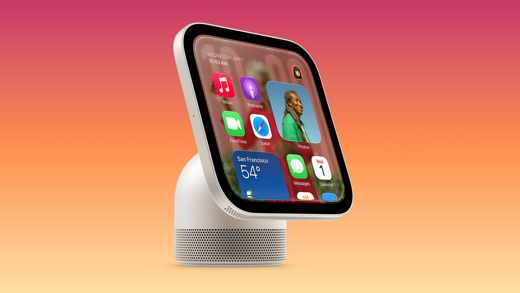

87Tier 0 · 特别关注｜Apple
001Apple HomeView 今天（11/13）开售：7 英寸方屏家庭中枢，靠摄像头和声音认出最多 6 位家人，首款搭载 Siri AI 的智能显示器，299 美元，新加坡同步上市
四维 76×1.15 Tier 0≈ 87
澳新时区已到 11 月 13 日，HomeView 首批订单开始送达，澳洲顾客成为第一批在 Apple Store 现场购买的人；首发地区包括美国、英国、加拿大、澳大利亚、印度、新西兰、新加坡和南非，因 Siri AI 未在欧盟上线而不在欧盟销售。它像小 iPad 和 HomePod 的结合：7 英寸方屏、桌面款带扬声器底座，另有壁挂款（安装件另购），能视频通话、看日历和天气、放音乐、控制智能家居，并显示 iPhone 小组件，但没有自己的 App Store。同日上市的还有搭载 A19、128GB、支持 Wi-Fi 7 与 Siri AI 的新 Apple TV 4K。The Verge 评测称它是出色的智能家居中枢和厨房帮手，但多人切换个人数据时验证繁琐、家人间可能互看短信；Tom's Guide 则认为 Siri 仍不如 Alexa+ 和 Gemini。
💡 点评你在新加坡今天就能买到。如果家里是全苹果、主要拿来控智能家居和放音乐，299 美元很值；想当「全家共用 iPhone」的话，先等 Siri AI 和个人数据分隔再改进一轮。前一晚公布的 Secure Exclaves 正是它摄像头认人的隐私底座。
来源：MacRumors；Apple Newsroom；The Verge / Tom's Guide 评测